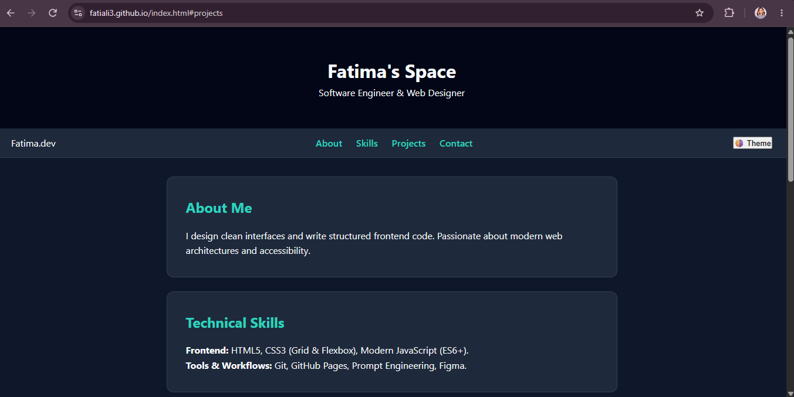

Interactive Web Application Case Study
A comprehensive frontend architecture built for responsiveness, performance, and strict WCAG AAA accessibility standards.

1. Problem Statement & Challenge
Modern web users demand fast, accessible, and responsive applications. The goal was to engineer a clean two-page web portfolio without reliance on heavy external frameworks like Bootstrap or React, ensuring ultra-fast load times and high Lighthouse compliance scores.
2. Key Technical Features
- Decoupled Architecture: Complete separation of concerns between structure (HTML), styling (CSS), and logic (JS).
- Dynamic Theme Switcher: Persistent dark/light mode toggle utilizing CSS custom properties and local browser storage.
- Accessible Form Validation: Real-time input handling with ARIA live regions for screen-reader feedback.
- Responsive Grid Layouts: Flexbox and CSS Grid structures optimized across all mobile and desktop viewports.
3. Technical Architecture & Implementation
Utilized a modular CSS architecture separating design tokens (`variables.css`) from layout rules (`base.css` & `landing.css`), paired with plain Vanilla JS for interactive states.
// Example: Accessibility live region notification handler
function notifyScreenReader(message) {
const liveRegion = document.getElementById('successMessage');
liveRegion.textContent = message;
liveRegion.setAttribute('aria-live', 'polite');
}4. AI Workflow & Optimization Strategy
Generative AI tools were integrated throughout the development workflow to audit accessibility compliance, assist in scaffolding semantic HTML tags, and optimize CSS variable configurations for peak performance.
5. Outcomes & Future Enhancements
The project successfully achieved 90+ ratings across Lighthouse audits. Future iterations will include integrating external REST APIs for dynamic project fetching and automated deployment pipelines.